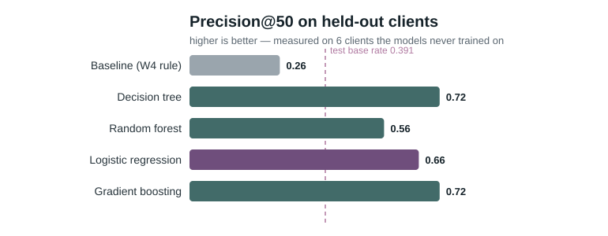
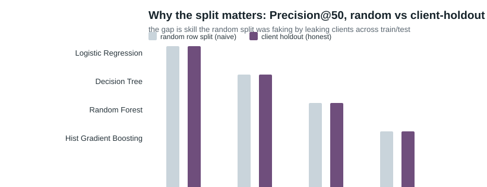
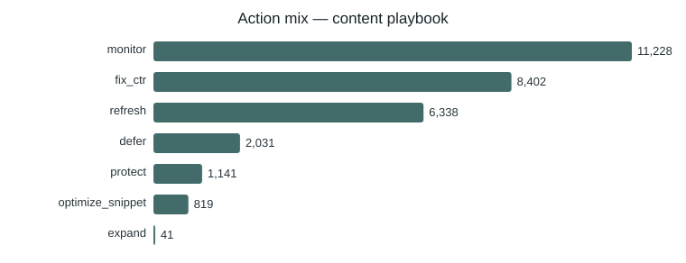

FlyRank's content problem is concrete: pages get found in search, rank, then quietly decay, and teams notice too late — so the question is which of thousands of pages an editor should fix first. I modeled 30,000 pseudonymized pages across 32 clients from the FlyRank ML Internship starter release, using a trailing 90-day search-performance window. I trained a logistic regression — alongside tree and gradient-boosting comparators — to rank pages by a same-window "declining" proxy label, validated on a client-holdout split, against a transparent hand-written rule baseline. On held-out clients the baseline rule ranked below the 39.1% base rate (Precision@50 = 0.26), while logistic regression and gradient boosting each reached Precision@50 = 0.72, with random forest leading Precision@20 at 0.80. The result feeds a human-reviewed action playbook — refresh, fix-ctr, protect, expand, defer — exported as a ranked queue for FlyRank-style editorial review, with every limit stated.
FlyRank builds content as infrastructure: it researches, writes, and publishes pages straight into client sites, then watches search data and optimizes — the full cycle, run by algorithms and AI rather than by hand. The problem this paper attacks is the one that cycle produces: pages get found in Google search, rank, then quietly decay — rankings slip, clicks drop, and most teams notice too late. The valuable decision is which page a human should fix first, out of thousands.
A content team can realistically review only a few dozen pages per cycle, but it owns thousands. The wrong choice is expensive twice over: a false positive burns an editor's hours on a page that did not need it, and a false negative leaves a quietly decaying page to keep losing visibility. The decision is a ranking problem — not "is this page declining?" but "which pages first?" — so the right metric is Precision@K: of the top K pages we actually act on, how many are genuinely declining.
This paper walks the full loop, the way the live sessions did it: encode a transparent rule first, audit the signals it leans on, then train a learned model that must beat that rule on the same data, the same split, and the same metric — and finally turn the output into a playbook a human can trust.
I used the bundled starter release of the FlyRank ML
Internship dataset: content_refresh_anonymized.csv —
30,000 rows × 44 columns, one row per pseudonymized
content item, across 32 pseudonymized clients, with
all performance metrics aggregated over a
trailing 90-day window. (The larger ~79M-row
warehouse release exists for the forward-window extension described in
Limitations; all modeling here is on the 30k slice.)
What I excluded and why:
trend_direction and trend_pct — the label
is computed from these, so they are never features.
impressions_last_30d,
impressions_prev_30d, and their click/session siblings)
— they are the trend inputs themselves.
days_with_impressions /
days_with_sessions — same-window presence counters that
nearly encode the trend-label categories (one alone reached AUC
0.758 on held-out clients).
content_id, client_id) —
grouping/splitting only, never features.
provider_used,
model_used) — not decision-time signals.
No client names, URLs, or raw queries appear anywhere in the data or this paper.
The proxy target is
is_declining_label = (trend_direction == "down") — the
page's current decline state on the trailing window (16,262 of 30,000
rows, a 54.2% base rate). It is a same-window proxy, not a
future outcome; that distinction drives the Limitations section.
The transparent rule from Week 4: a page is worth reviewing if it still has demand, has gone stale, and under-performs on click-through. Encoded as a readable product of three parts:
score = stale(≥90d) × demand(percentile of log impressions) ×
ctr_weak(1 − min(ctr,2)/2)
On all 30,000 rows this rule reaches Precision@50 = 0.66 — a number that looks healthy until the split is made honest.
Four classifiers, ranked by their predicted probability:
logistic regression (readable), a depth-limited
decision tree (a printable rule),
random forest, and
histogram gradient boosting. Features: 63 columns —
log-scaled traffic totals, rates (CTR, engagement, scroll,
AI-traffic), freshness/age, word count, plus one-hot
intent/competition/tier categories, with has_position and
has_word_count flags for measurement gaps.
Client-holdout split (seed 42): ~20% of clients (6 of 32) are held out, so the model must score pages from clients it never trained on. A random row split leaks a client's template and traffic scale across train/test and inflates the result — the before/after in Results shows exactly how much.
Adding trend_pct (the label source) to the features sends
logistic regression to AUC 0.999 — the "reads the answer" signature,
confirmed excluded. days_with_impressions alone reaches
AUC 0.758, confirming its exclusion. The final feature set contains no
label-derived or same-window columns.
Both baseline and models are scored only on the 6 held-out clients (test base rate 39.1%).
| Model | P@20 | P@50 | P@100 | ROC-AUC | Avg precision |
|---|---|---|---|---|---|
| Baseline (Week-4 rule) | 0.50 | 0.26 | 0.32 | 0.493 | 0.392 |
| Decision tree | 0.60 | 0.56 | 0.60 | 0.735 | 0.572 |
| Random forest | 0.80 | 0.66 | 0.65 | 0.735 | 0.584 |
| Logistic regression | 0.70 | 0.72 | 0.71 | 0.711 | 0.580 |
| Gradient boosting | 0.80 | 0.72 | 0.69 | 0.721 | 0.578 |


Permutation importance (measured on the test set) puts
log impressions (demand), word_count/char_count
(depth), has_position (whether rank is measured),
log clicks (engagement), and
content_age_days at the top — all plausible, none
suspiciously perfect once the presence-counters are out. The failure
shape is concrete: false positives are long keyword articles with
zero clicks/zero CTR that are actually new or
improving; false negatives are pages with
healthy CTR that are still losing impressions. Error
rate is ~10% on top-3 pages but ~62% on deep pages — the ambiguous
middle is where the model is weakest.
What this work cannot claim. The label is a
same-window proxy, so "decline risk" means the snapshot's decline
state, not a forecast of next month — no causal claim ("a refresh
will lift traffic") is supported without a before/after or matched
design. The model was validated on 32 pseudonymized clients;
Precision@50 = 0.72 still means roughly 1 in 4 top-50 picks is
wrong. The queue is cross-client and unscaled, so a single
high-volume client can dominate the top (the first production
hardening step, deliberately left out). Rates like CTR are per-page
snapshots, and thin_visible detection only works where
word count is measured.
Every number above sits next to its base rate and its split. Findings are phrased as observed / measured / directional / decision-support — never as prediction of a search engine.
The validated model ranks all 30,000 pages; a transparent reason ladder attaches one action to each. The top of the queue is where a reviewer should start.
| Reason code | Action | Pages | Rule (observable features) |
|---|---|---|---|
stale_visible |
refresh | 6,338 | ≥90 days stale and ≥500 impressions |
visible_low_ctr |
fix_ctr | 8,402 | ≥500 impressions and CTR < 0.5% |
top3_asset |
protect | 1,141 | position 1–3 (verify snippet, never rewrite blindly) |
striking_distance |
optimize_snippet | 819 | position 11–20 and ≥300 impressions |
thin_visible |
expand | 41 | word count < 1,200 and ≥250 impressions |
deep_no_clicks |
defer | 2,031 | no clicks and deep/no position |
healthy_or_ambiguous |
monitor | 11,228 | no clear lever |

refresh targets pages with a median
3,414 impressions at stake (highest), while
defer catches pages with a median of 3 (nothing left to
recover) — so effort follows where the traffic is.
The decay/refresh insight: the observed decline rate climbs from 51.1% (0–30d stale) to 61.1% (91–180d) and then falls to 46.7% (181–365d) — beyond ~180 days the pages are mostly dead. Refresh in the 90–180 day band; defer the long-dead ones.
Human review and no-go: every flagged row needs a human check — verify the page is real and current, read it against query intent, check for rich-result impression sources, confirm the effort is worth it, and compare against sibling pages before rewriting. Never automate: publishing/editing/deleting content, rewrites without a human author, archive decisions, budget or revenue commitments, client-facing causal claims, or numbers reported without their base rate and split.
All work lives in the repository at github.com/egealgel/FlyRankInternship. The notebooks that produced this paper:
Random seed is fixed at 42 everywhere; the environment is a standard
Python 3.14 + scikit-learn 1.9 stack (requirements.txt).
Metrics receipts are committed under work/outputs/*.json;
the ranked queue is regenerated by
w07_action_playbook.ipynb on every run.
Built on the FlyRank ML Internship dataset — a pseudonymized, public-safe release of real search-analytics data made available for this program. Thank you to the FlyRank team and the internship mentors whose live sessions (signal audits, honest baselines, leakage hunting, validation design) shaped every step of this work.